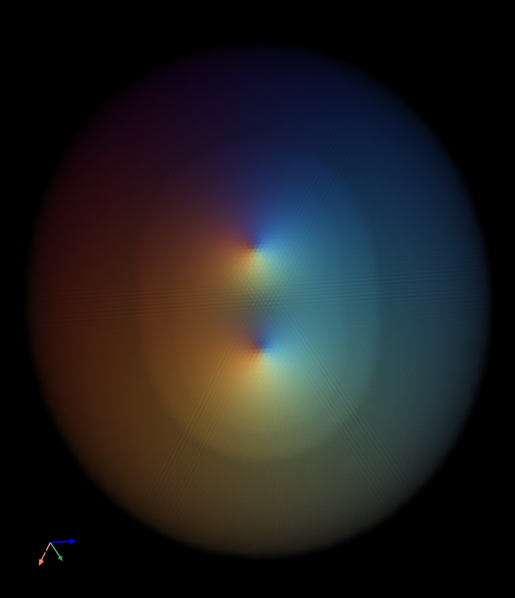
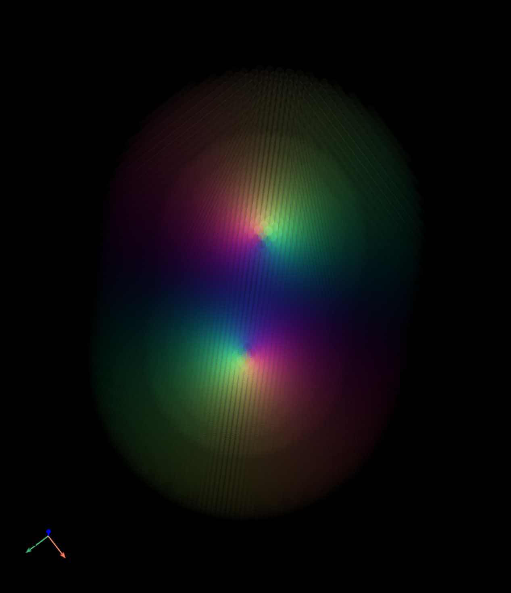
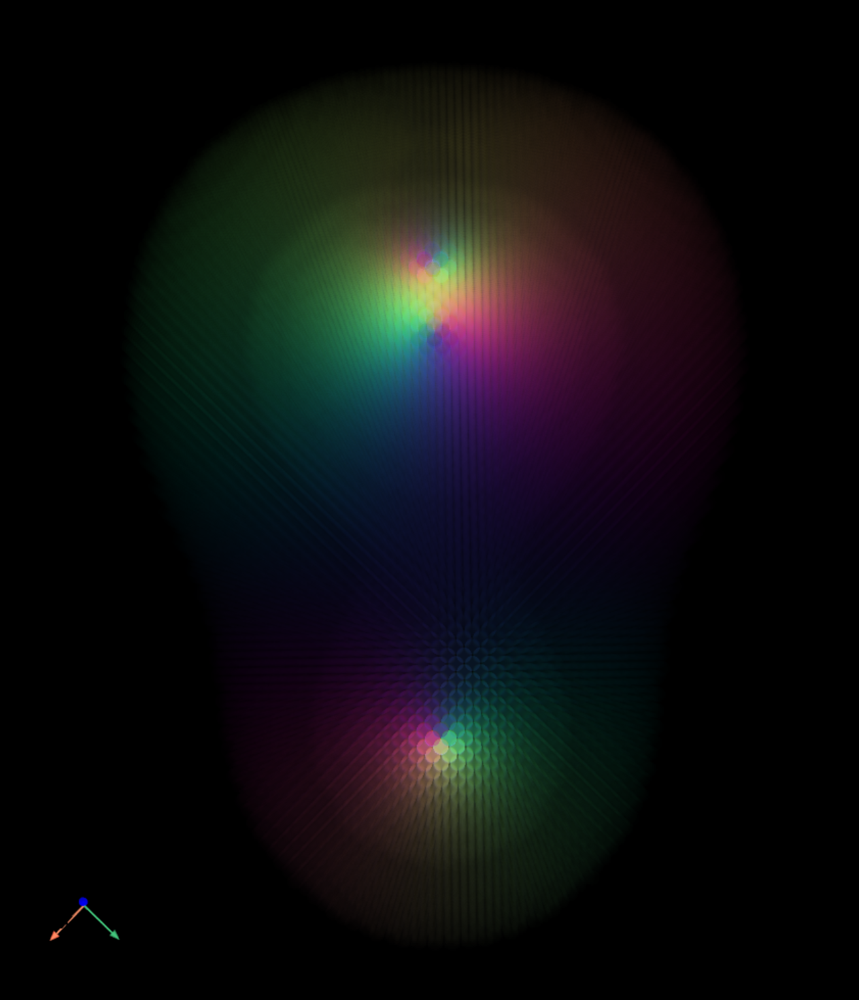
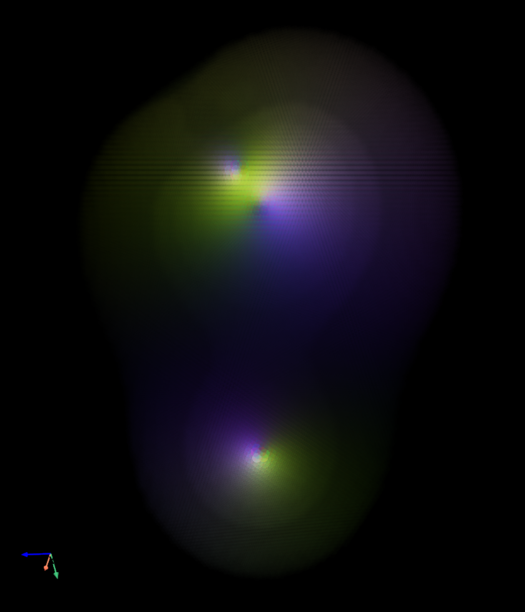

Electric fields as color and transparency
Four existing project images preserved from their original GitHub attachments. These are historical showcase images, not results generated during this documentation pass.
English README · 中文 README · Parameters & provenance manifest
Symbols, units and evidence
The original concept associates electric-field direction components X/Y/Z with red/green/blue and field magnitude with opacity.
The signed RGB transform, opacity transfer, normalization and numeric units were not specified. A quantitative color legend cannot be reconstructed from the published material.
Charge positions and strengths, grid spacing, singularity regularization and camera settings were not supplied. The small orientation triad belongs to each original image.
The inspected repository publishes no field-calculation or PyVista rendering source. The images support visual exploration; an executable, reproducible renderer remains unpublished.

Two positive charges
Original public README label. Source positions, strengths, sampling and numerical color mapping were not published.


Electric dipole
Original public README label. Source positions, strengths, sampling and numerical color mapping were not published.


Complex case 1
Original public image; source configuration and calculation parameters are unspecified.


Complex case 2
Original public image; source configuration and calculation parameters are unspecified.